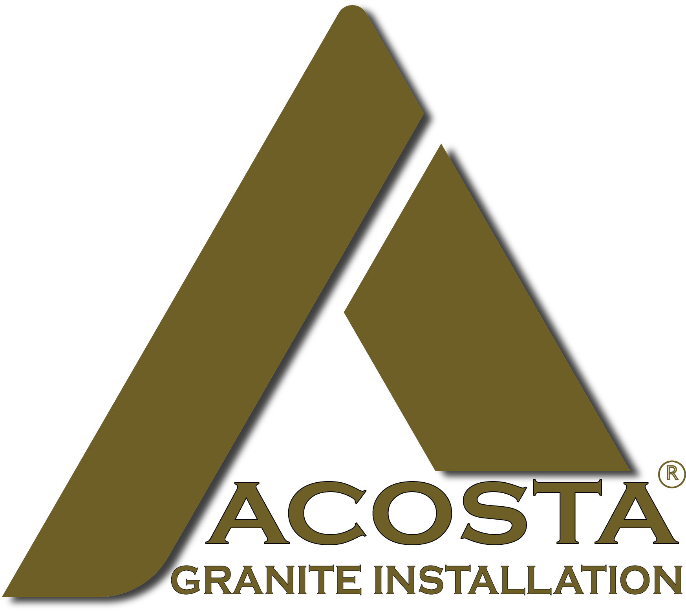
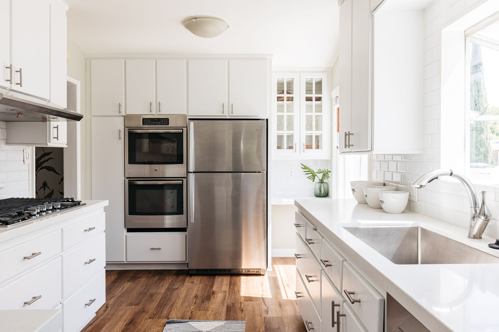
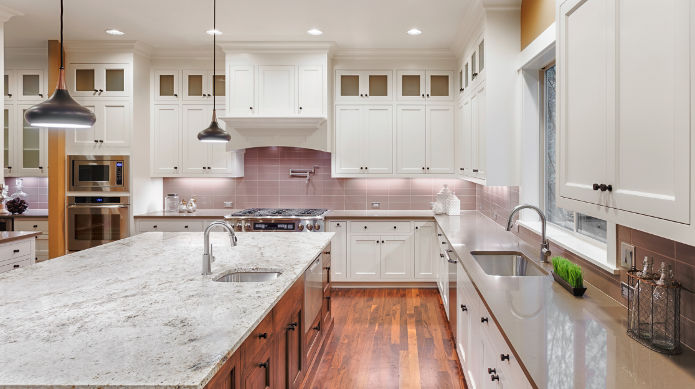
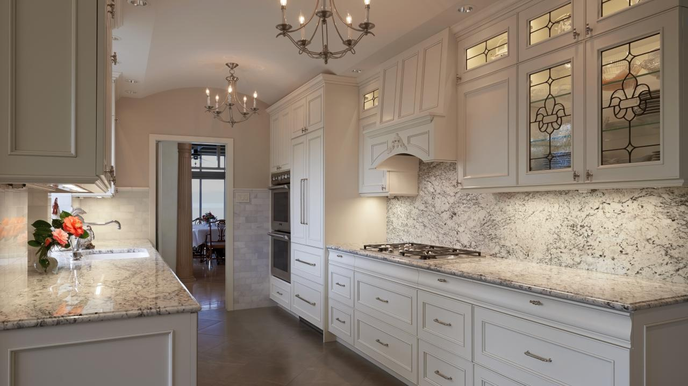
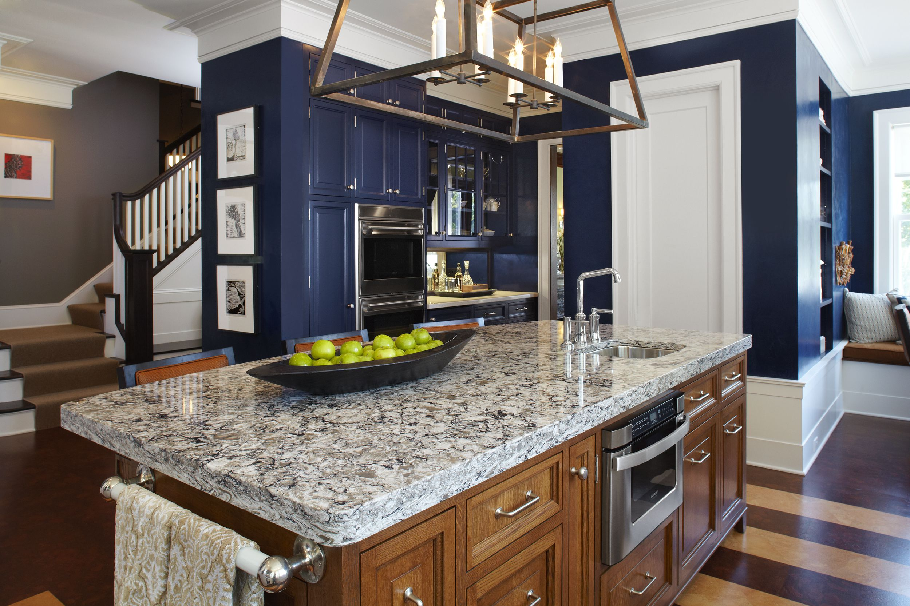
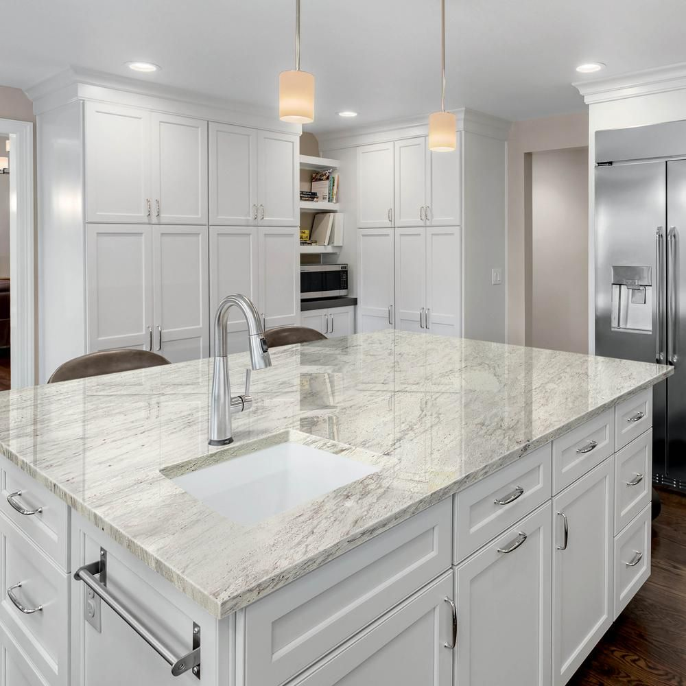
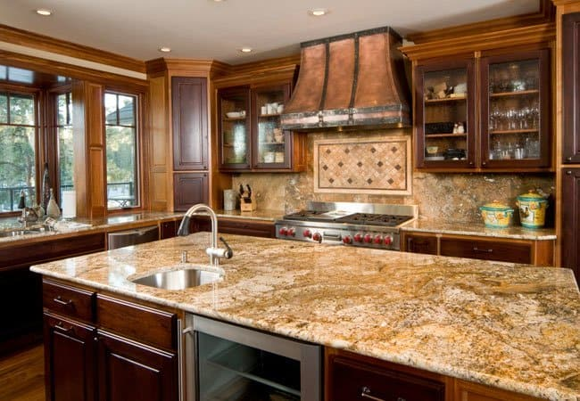

Gallery













Welcome to Acosta Granite, where excellence meets elegance in the world of granite countertops. At Acosta Granite, we take pride in transforming spaces with the timeless beauty and durability of granite. Our commitment to perfection is evident in every detail, ensuring that your countertops not only meet but exceed your expectations.
Why choose Acosta Granite? Our team of skilled professionals combines expertise with a passion for craftsmanship. We source the finest quality granite, carefully selecting each slab to guarantee both beauty and durability. With meticulous attention to detail, we ensure that every cut, polish, and installation is executed with precision, creating stunning countertops that become the centerpiece of your kitchen or bathroom
Discover the difference of granite countertops from Acosta Granite. Elevate your living spaces with the unparalleled beauty and craftsmanship that defines us. Welcome to a world where perfection meets satisfaction – welcome to Acosta Granite.